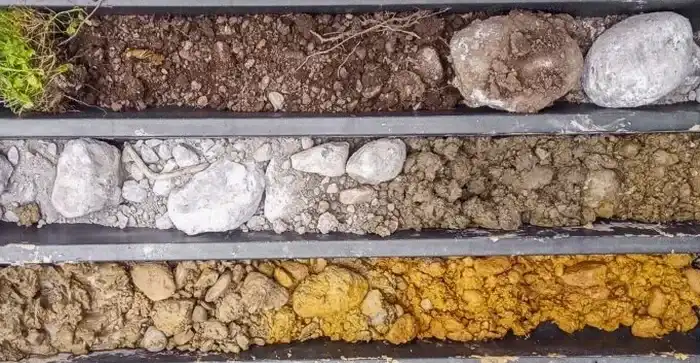

Notre bureau d'études géotechniques à Angers propose une gamme complète de services pour tous types de projets : reconnaissance des sols, conception de fondations, études de stabilité et instrumentation. Nous intervenons sur l'ensemble du Maine-et-Loire, en nous appuyant sur une connaissance approfondie des formations géologiques locales. Notre approche intègre des investigations de site rigoureuses, des essais en laboratoire calibrés et des modélisations numériques pour garantir des solutions fiables et économiques. Que ce soit pour des bâtiments neufs, des infrastructures ou des ouvrages de soutènement, nous assurons une conformité stricte aux normes françaises en vigueur.
